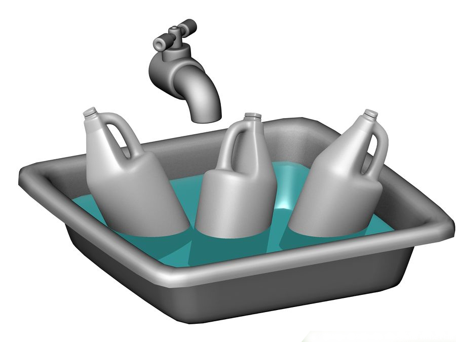

Once the chemicals have been mixed and stored in the gallon jugs, you need to bring them to the correct temperature.
Fill a large sink (like your kitchen sink) with water that is 68 degrees Fahrenheit (20 degrees Celsius). Use the thermometer to get the correct temperature. That is, 1 part developer to 3 parts water. This gives you a "stock" solution. Fill one gallon jug with this stock solution. The stock solution will be diluted more before using it on the film. Diluting this stock solution will provide you with a "working" solution.
This is very important. Now put your gallon jugs of chemicals in the sink, floating in the water. These chemicals must be 20 degrees Celsius when you use them. You are going to put them in 68 degrees water because the temperature of the water is going to drop a bit while bringing the chemicals to the correct temperature. Try to be as accurate as possible when it comes to the chemicals' temperature. More than 1 degree above or 1 degree below 20 degrees can have a big effect on the film! Remember, the final chemical temperature you want is 20 degrees, and you are soaking the chemicals in 68 degree water because the gallon jugs will sit in the water for at least 30 minutes, and the water temperature will drop a couple degrees during that time.
